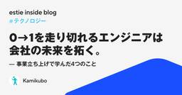

estie inside blog
https://www.estie.jp/blog/
estie inside blog
フィード

0→1を走り切れるエンジニアは会社の未来を拓く。事業立ち上げで学んだ４つのこと
estie inside blog
エンジニアとして技術的な成長は確かに感じる。 でも、自分の仕事が事業成長につながり、会社の利益を生み出している実感が持てない。 新卒3年目の当時の私は、そんな悩みを抱えてベンチャー企業に転職し、新規事業の立ち上げに関わり始めました。 しかし立ち上げは、誰も知らない正解を追い求める日々です。成果が出ないまま走り続けるのは、やっぱり苦しい。 それでも走り切れた経験は、自分のキャリアを確実に前に進めてくれました。 PMFを目指すチームが前に進むにはどうしたらいいのか──過去の自分が欲しかったその答えを、4つの学びとしてまとめます。 【プロフィール】上久保 竜輝（かみくぼ りゅうき） 東京大学卒業後、…
6日前

NLP2026（言語処理学会第32回年次大会）にプラチナスポンサーとして協賛いたします
estie inside blog
Market Research GroupでSWEをしている本郷です。estieは、NLP2026（言語処理学会第32回年次大会） にプラチナスポンサーとして協賛いたします。 estieが協賛するのは今年で3年目となり、今回も一件の発表を予定しています。現地会場には数名のメンバーで参加予定ですので、ぜひお気軽にお声がけください。懇親会も企画していますので、そちらもぜひご参加ください！ NLP2026について NLP2026は、日本における自然言語処理および関連分野の研究発表や情報交換の場として、言語処理学会が年に一度開催している学会です。 日程：2026年3月9日（月）〜 3月13日（金） オ…
9日前
estie テックブログを始めます
estie inside blog
こんにちは、estie 取締役CTO の Nari (@tiwanari) です。今回、Zenn に 「estie テックブログ」の Publication を作り、技術広報をしていく場を開設しました。 これまでは estie inside blog において、技術の内容も会社の内容もあらゆることを幅広く扱ってきたこともあり、「技術の記事が見つけにくい」という声をいただいていました。今回の技術に絞ったテックブログ開設はこれを解消するものです（入社エントリーなど技術に限らないものは今までどおり estie inside blog に掲載していきます）。 なぜ技術発信を新たに始めるのか 初めまして…
10日前
前に進む産業の中で、当事者であり続けたい
estie inside blog
【プロフィール】山田 千秋（やまだ ちあき） 上智大学卒業後、ゼネコンに入社。その後、営業アウトソーシングを行う株式会社セレブリックスに入社。SMB領域を中心に、新規営業としてインサイドセールス・フィールドセールスの両方を経験。 2025年6月にestieへ参画し、現在はサクセスエキスパートを担当。 これまでのキャリア 大学卒業後、「カンボジアの街づくりに関わりたい」という思いから、カンボジアに支社を持つゼネコンに入社しました。 高校時代に外務省のプログラムで訪れたカンボジアに強く魅了され、大学時代は半年に一度のペースでボランティアサークルを通して現地でできた友人に会いに行っていました。 魅力…
11日前
【estie inside FM】2026年1月公開エピソードまとめ
estie inside blog
株式会社estieが送るポッドキャスト番組「estie inside FM」。2025年1月から開始し、毎週金曜日に新しいエピソードをお届けしています。 各回のエピソードには、ユニークなゲストを迎え、estieの取り組みや個性的なメンバー、そして不動産業界のトレンドについてお届けしております。 今回は、2026年1月に更新した、3つのエピソードをご紹介します！まだ聴いていなかったエピソードや、気になるエピソードがあれば、ぜひご一聴ください。 #47課題解決のために「全部やる」──クライアントソリューション統括本部が目指すもの【統括本部長 櫻井 × 代表 平井】 2026年1月最初のエピソードで…
19日前
「AIのPRはレビューが大変」の正体を分解してラクになる
estie inside blog
こんにちは！スタッフエンジニアの @kenkoooo です。 ここ1年で、開発の現場でAIを使う機会が一気に増えました。新規実装からテストコード、既存コードのリファクタまで、AIがコードを書いてくれる範囲は広く、チーム全体のスピード感も変わりつつあります。 一方で、よく聞く話として「AIが大量のプルリクを出してくるのでレビューが大変」というものがあります。しかし、レビューがつらくなる原因は量そのものではなく、レビューしやすい前提が揃っていないためであると考えています。 この記事では、AIが出してきたプルリクをレビューしづらい原因を考え、それらに対してどのように対処しているかを紹介します。 意図…
24日前
【都道府県別】特殊な住所・住居表示
estie inside blog
こんにちは。estieでデータクオリティーマネージャーをしているkageyuです。estieは不動産データをたくさん扱っており、その場所は住所を使って表すことが多いです。 不動産には「不動産登記番号」や最近国土交通省が整備しつつある「不動産ID」などが存在しますが、大抵の場合は住所と建物名を使って建物が指定されています。そのため、複数の不動産データを統合するとき、主に住所と建物名を使って突合します。 データクオリティーマネージャーとしては、突合処理で 住所が正しく正規化できているか？ 正規化の前後で情報が欠落していないか？ その住所は実在するのか？ などを確認しており、データを見ていると違和感…
1ヶ月前
現場に出て、一次情報から価値をつくる。デザインエンジニアとしてestieを選んだ理由
estie inside blog
【プロフィール】木田 峻介（きだ しゅんすけ） 芝浦工業大学デザイン工学部を卒業後、デザイナーとしてヤフー株式会社に新卒入社。バナーや駅ナカ広告などの販促物制作や、大規模サービスのUX/UIデザインを担当。ソフトウェア開発に携わる中で興味関心の範囲はディスカバリーからデリバリーまで広がり、現在はフロントエンド開発にも携わっている。 今までのキャリア 大学では、物理的に存在するプロダクトデザインを専攻し、デザインとは「課題解決」であるという考え方を学びました。その考え方に面白さとやりがいを感じ、新卒でヤフー株式会社にデザイナーとして入社し、社会人としてのキャリアをスタートしました。 ヤフー株式会…
1ヶ月前
インフレ時代のPMに求められる、顧客との向き合い方
estie inside blog
こんにちは。estieでプロダクトマネージャー（PM）をしている三橋です。 年始に聞いたとある話の中で、「インフレにどう適応するか」というテーマが強く印象に残りました。私は経済学者でも評論家でもないので、インフレそのものを論じるつもりはありません。ただ、マクロでもミクロでも、私たちを取り巻く経済環境が変わってきているのは事実であり、「インフレ適応」は、実はPMこそ真っ先に向き合うべきお題なのではないか、と最近強く感じています。 思い返せば、これまでの私のPMキャリアは、完全に「デフレ時代」の中にありました。価格は基本的に下がるもの。コストは抑えられるもの。そんな前提の中で、意思決定をしてきた感…
1ヶ月前
Terraformをモノレポ化した話 — tfactionを使ったプロダクト横断IaC運用の実践
estie inside blog
こんにちは、P2O（X: @hitsumabushi845）です。昨年11月から estie で SRE をしています。 inside blog では初めての投稿となります。 estie では、社外向け・社内向け問わず数多くのプロダクトが稼働しており、それらのインフラ全てを Terraform で管理しています。 Terraform で管理される数多くのインフラをどのように整理・運用するかは、各組織で様々な方法がとられていることかと思います。 estie では、tfaction を活用することで大量のプロダクトの IaC を纏めたモノレポを作成しました。 本記事ではその内容について紹介します。…
1ヶ月前
ワクワク駆動開発で選んだestieという環境
estie inside blog
【プロフィール】井上 真嘉（いのうえ さだひろ） 光学機器メーカーに新卒入社し、生産工程における人手作業の自動化・効率化を目的としたハードウェア・ソフトウェア開発に7年間従事。製造業の検査工程の課題解決に注力すべく、2020年にAIスタートアップへ転職し、ソフトウェア開発と機械学習モデル開発を担当。 2025年9月よりestieにソフトウェアエンジニアとして参画。 今までのキャリア 高専から大学院までの学生時代は、好奇心を原動力に興味を持った分野を探求してきました。専攻は電気電子・機械でしたが、特に「光」という自然界でも身近かつ重要なエネルギーに強く惹かれ、光学の研究に取り組んでいました。研究…
1ヶ月前
dbt-snowflakeにおけるPython modelの保守性を上げる実装パターン
estie inside blog
こんにちは。Data Management Group（以下、DMG）の宮崎です。主にデータパイプライン開発やWebサーバーサイド開発に携わりつつ、CIやデータ基盤の改善にも取り組んでいます。 DMGではデータパイプラインにdbtとSnowflakeを採用しています。また、Pythonの経験を持つメンバーが多いこともあり、dbt Python model（以下、Python model）を積極的に活用しています。このようなdbtデータパイプラインを開発する中で、Python modelの保守性・信頼性の課題も見えてきました。そこで、Python modelを含むdbtデータパイプラインを、継続…
1ヶ月前
事業と産業のど真ん中へ。次の挑戦として辿り着いた、estieという環境。
estie inside blog
【プロフィール】小林 純（こばやし じゅん） 青山学院大学卒業後、2022年4月に新卒でSansan株式会社に入社。中部支店にて東海・北陸エリア SMB領域の新規営業を担当。その後本社でエンタープライズ営業部に異動。大手企業向けの新規・既存営業に従事。 2025年8月よりestieに参画。アカウントエグゼクティブを務める。 今までのキャリア 新卒入社当時の Sansan は、名刺管理サービスを軸に事業としてはすでに一定の成長を遂げていながら、組織としてはまだ拡大の途上にあるフェーズでした。 仕組みは整っている一方で、「これが正解だ」と言い切れる型はまだ固まりきっていない。そんな独特のスピード感…
1ヶ月前
「子育てしながら、ちゃんと挑戦できる。estieで“働くママ”のリアル」
estie inside blog
はじめに 子育てをしながら転職を考えるとき、 「本当に両立できるのか」「今の働き方を手放していいのか」、そんな迷いは誰でも一度は感じると思います。 今回対談する misako と mishimaru も、まさにその一人でした。 それぞれ悩みながら検討を重ね、最終的に estie を選んでいます。 この対談では、「なぜ悩んだのか」「実際に働いてみてどう感じているのか」を、正直に話しています。 同じように悩んでいる“働くママ”にとって、少しでも参考になれば嬉しいです。 左：mishimaru、右：misako 転職を考えるとき、ママが一番悩むこと（対談） mishimaru 入社：2025年10月…
1ヶ月前
話しやすいから、連携しやすい ── estieのIS×マーケが自然に協働できる理由
estie inside blog
インサイドセールスとマーケティングの「連携しやすい」組織づくりとは何でしょうか。 estieでは、インサイドセールス担当の伊藤とマーケティング担当の千葉が、連携について日々向き合っています。今回は二人の対話を通じて、その背景や工夫を掘り下げていきます。 なぜestieのISとマーケは“うまくいっている”のか 伊藤：最近、インサイドセールス（以下IS）とマーケの連携が良く、お客様のニーズの把握や案件創出の面で効率よく活動できていると感じています。なぜこういう雰囲気や関係性がつくれているのかを言語化してみたいと思います。 千葉：ISもマーケもestieでは立ち上がって間もない組織ですよね。お客様の…
2ヶ月前
「リアルな世界」をエンジニアリングする。“確かな手触り”を求めてestieへ
estie inside blog
【プロフィール】松谷 勇史朗 2016年に株式会社スタメンに新卒入社。エンジニアとしてプロダクト開発に従事し、2020年よりCTOに就任。東証マザーズ（現・グロース）上場や複数の新規事業立ち上げを経験。約9年間の在籍を経て、2025年6月よりestieに参画。 今までのキャリア 新卒から約9年間、株式会社スタメンで過ごした時間は、まさに「濃密」の一言でした。 2016年、まだ学生インターンだった頃に飛び込み、創業期の混沌とした中で、コードを書くだけでなく、採用や組織マネジメントまで、会社が前に進むために必要なことは文字通り「なんでも」やりました。 会社の成長過程で責任を持って様々な役割を経験で…
2ヶ月前
デザインエンジニアMeetup! #4 イベントレポート
estie inside blog
2025年12月4日に「デザインエンジニアMeetup #4」を開催しました！ デザインとエンジニアリングを横断し、プロダクトのデリバリーやアイデア検証を高速に行う「デザインエンジニア」。この職種はまだ事例が少なく、業務内容やキャリアの実態が語られる機会は多くありません。そこでestieでは、現場の知見をオープンに共有できる場として、Meetupを継続的に開催しています。 第4回のテーマは「ドメイン特有のデザインとエンジニアリング」です。 estieでは、地図関連のUIをはじめドメインならではの機能が多く開発されています。“ドメイン特有のデザイン、それを実現するための設計・実装” を気軽に語り…
2ヶ月前
【イベント開催レポート】売主・買主・仲介が一堂に会する、“リアルなつながり”の場 ― 不動産MeetUp開催
estie inside blog
私たちestieは、「不動産DX HUB 〜業界の知見を共有し学び合う場～」というコミュニティを運営しています。 その一環として、売主・買主・仲介会社の皆さまを対象にした交流会「不動産MeetUp ～売主・買主・仲介の集い～」を、東京ミッドタウン・イースト4Fのestieオフィスラウンジにて開催しました。 当日は30名を超える多様なバックグラウンドの方々が集まり、企業の垣根を超える、不動産取引に関するリアルな課題や注力ポイント、最新動向について活発な意見交換が行われました。「初対面でも話しやすい」「実務に直結した情報が多い」といった声が聞かれる、温かくも実践的な交流の場となりました。 本レポー…
2ヶ月前
Pythonアプリケーションでの異常系表現を形式化したい
estie inside blog
こんにちは。Data Management Group（以下DMG）の宮崎です。主にデータパイプライン開発やWebサーバサイド開発に携わりつつ、CIやデータ基盤の改善にも取り組んでいます。 DMGでは機械学習を利用するサーバーアプリケーションやデータパイプラインの実装でPythonを利用しています。本稿は、これらを高速・高品質に実装する上で悩まされた、Pythonアプリケーションコードにおける異常系の取り扱いの話になります。 モチベーション Pythonにおける異常系表現の基本は例外ですが、アプリケーションコードにおける例外の取り扱いはコード設計全体に影響を与える一方、納得できる形がなかなか見…
2ヶ月前
estieは「産業の真価を、さらに拓く。」ことができるのか？2026年初の現在地
estie inside blog
こんにちは、estie（エスティ）の平井です。2026年始動に向けた事業の現在地を振り返ります。 最近ではM&Aを4件実施、従業員はグループ全体で約170名、プロダクトは10個以上、大手顧客の導入率は90%を超えるなど、引き続き大きな成長を遂げることができております。まずはじめに、日頃応援いただいているお客様、投資家や金融機関、社員やその家族の皆様に心から感謝申し上げます。 estieはもはや「データだけの会社」ではなく、また「SaaSの会社」でもありません。このブログではestieの現在地を記載するとともに、私たちのPurposeである「産業の真価を、さらに拓く。」という挑戦についてご紹介し…
2ヶ月前
職種の壁をなくし、全員で成果に向き合う。estieの展示会の舞台裏
estie inside blog
estieには、職種の枠にとらわれず、成果に向き合うために必要なことを全員でやり切る文化があります。 その文化が分かりやすく表れる場の一つとして「展示会」があります。 展示会は、お客様と直接お会いしてサービスをお伝えできる貴重な機会であり、私たちが大切にしている“価値提供のあり方” が非常に濃く現れます。 今回は、「展示会」という具体的な取り組みを通して、estieの文化を紹介します。 お客様への価値提供を最大化するために工夫し続ける estieの展示会ブースでは、 「短い時間で、お客様の困りごとや課題に向き合い、わかりやすくサービスを知っていただくにはどうしたら良いか」 を全員で考え続けてい…
2ヶ月前
【AI時代のMOAT】Product Leaders 2025 Slido アンサーブログ
estie inside blog
はじめに 2025年 10月15日に CPO 協会が主催した Product Leaders AI 2025 というイベントにて、「AI × 価値創造最前線 -顧客価値／M&A／Vertical Data Moat」というタイトルでパネルディスカッションに登壇させていただきました。 大変ありがたいことにイベントでは Slido で会場からご質問をいただいていたのですが、時間の都合で回答できなかったものが多くございました。勝手ながらとても有意義な内容も多く含まれていたと感じましたので、少し時間が空きましたがアンサーブログのかたちでご回答できればと思います。 なお、一部ご質問の意図が正確に分かりか…
2ヶ月前
痺れる挑戦を求めて。ITコンサルから不動産テックのestieへ
estie inside blog
【プロフィール】柳沢 悠哉（やなぎさわ ゆうや） 千葉県出身。東京理科大学卒業。 新卒でベンチャーコンサルファームに入社。基幹システムのシステムリプレースPJにてPMO・テスト推進、本社での100人規模の組織改善支援、新卒向け社内研修講師など幅広い業務を経験。 2025年9月よりestieに参画。金融機関向けのカスタマーサクセスを担当。 はじめまして。2025年9月よりestieに参画した柳沢と申します。 新卒から3年間勤めたITコンサルを離れ、未経験の不動産業界へ飛び込むという大きな決断をしました。 この記事では、「なぜestieだったのか」「入社後に感じたリアル」「これから挑みたいこと」を…
3ヶ月前
QAがアーキテクチャConferenceに登壇してきた話
estie inside blog
はじめに こんにちは、estieでQAエンジニアをしている macho です。 先日、アーキテクチャConference 2025 に弊社開発組織のメンバーと登壇してきました！ 「アーキテクチャConferenceにQAエンジニアが出るの珍しいね！」現地でそんなリアクションをいただいたこともあり、改めてブログに残したいと思ったので書いてみます。 この記事は以下の3本立てでお届けします。 カンファレンス登壇内容の紹介 estieでQAがデータ品質に向き合う意義 これからデータ品質領域で取り組みたいこと アーキテクチャConference とは？ その前にアーキテクチャConferenceについて…
3ヶ月前
「良い事業」と「良い組織」を考え続けてきた私の次の挑戦
estie inside blog
【プロフィール】三島 陽香（みしま はるか） 大学卒業後、新卒でリクルート（旧リクルート住まいカンパニー）に入社。 その後、2018年7月に株式会社グロービスに転じ、組織開発・人材育成のコンサルタント、プロダクト企画業務に従事。 2025年10月よりestieに参画。グロービス経営大学院修了（MBA）。 プライベートでは2歳半の子どもの母。毎日仕事と育児に奮闘中。 今までのキャリア 新卒でリクルート（旧：リクルート住まいカンパニー）に入社し、東京の地場不動産会社様向けにSUUMOの広告提案を行っていました。売上・利益向上に向けた「広告」という投資判断をしていただく仕事だったため、経営者の方々と…
3ヶ月前
【雰囲気レポ】estie PM Meetup #6 「ドメイン知識の壁とその突破法」を開催しました
estie inside blog
はじめに この前の木曜日、通勤ラッシュの時間に日比谷線に乗りました。 スマホも取り出せない満員電車の混雑の中、視線を上げると、ドアの上に東京メトロの路線図が掲示されているのが目に入ります。 私はこの路線図を見ると、「まだ降りたことがない駅」を探してしまいます。 ぱっと思いつくのは錦糸町。日比谷線も秋葉原から北千住は全滅かもしれません。東京に住んでなんやかんや10年以上経ちますが、未だに都心部にも未開拓の駅があるものです。 みなさんの「降りたことがない駅」はどこですか？ それらの駅でアポがあるとして、初めて降りるときのことを想像しましょう。どうでしょう。理想的なルートで目的地にたどり着けそうでし…
4ヶ月前
自分を変え、業界を変える。estieで挑む、次のステージ
estie inside blog
【プロフィール】伊勢馬場 拓海（いせばば たくみ） 大学卒業後、株式会社オープンハウス・ディベロップメントに入社。用地仕入や物件企画、近隣交渉など、不動産開発の最前線で複数のプロジェクトを推進してきました。土地の目利きや事業リスクの判断、社内外の条件調整などを通じて、現場での実行力と課題解決力を磨く日々。業界に残る情報の不透明性を変えたいという強い想いからestieに参画し、現在はインサイドセールスとして挑戦しています。 今までのキャリア 新卒で入社したオープンハウス・ディベロップメントでは、不動産開発の入り口である「用地仕入」を担当していました。飛び込み営業が中心で、1日に30〜40社の不動…
4ヶ月前
【estie inside FM】2025年10月公開エピソードまとめ
estie inside blog
株式会社estieが送るポッドキャスト番組「estie inside FM」。2025年1月から開始し、毎週金曜日に新しいエピソードをお届けしています。 各回のエピソードには、ユニークなゲストを迎え、estieの取り組みや個性的なメンバー、そして不動産業界のトレンドについてお届けしております。 今回は、2025年10月に更新した、5つのエピソードをご紹介します！まだ聴いていなかったエピソードや、気になるエピソードがあれば、ぜひご一聴ください。 #38 「熱は伝播するからこそ、常に39.2°で」estieの営業が事業開発も担う理由【マーケットリサーチ事業本部 杉田 × 代表取締役 平井】 第38…
4ヶ月前
秋だね！みんなで街歩き 〜全社定例の一部をお見せします！〜
estie inside blog
全社定例の目的 こんにちは、HRの小酒井です。 さてこのブログをご覧のみなさん。今所属している会社で、オフラインで全社で集まる機会ってどれくらいありますか？ここは各社のカラーが出る部分だなと思っていて、これまで私が所属していた会社を例に出すと毎週オンラインの全社MTGがある会社・毎週オンラインの全社MTGに加え、四半期に一回オフラインで全社オフサイトなど機会は様々、内容は共通して「みんなで会社の大事な数値を見る」という傾向が強いかな？と思いますが、この形式をとっている会社は多いのではないでしょうか？ estieも毎月全社定例を行っていますが、特徴としては必ずオフラインかつコンテンツが毎月違うと…
4ヶ月前
【イベントレポート】サウナで“ととのう”、壁も超える！ estie社内サウナ部のご紹介
estie inside blog
こんにちは、インサイドセールスチームの伊藤です。今回は、estie社内で活動している「サウナ部」についてご紹介します！ 仕事終わりのリフレッシュから、休日のサ旅（サウナ旅）まで、サウナを通じてととのいとつながりを楽しむメンバーの様子をお届けします。 ■ 雑談から始まったととのいの輪 きっかけは、ある日の「サウナで疲れを飛ばしたいね」という何気ない一言でした。 その言葉に共感したメンバーが集まり、気づけば定期的に活動する「サウナ部」が誕生しました。 活動としては、隔週で仕事終わりに近場のサウナでリフレッシュしています。 また、最近は休日に県外まで足を伸ばして、名湯やローカルサウナを巡ったりもしま…
4ヶ月前